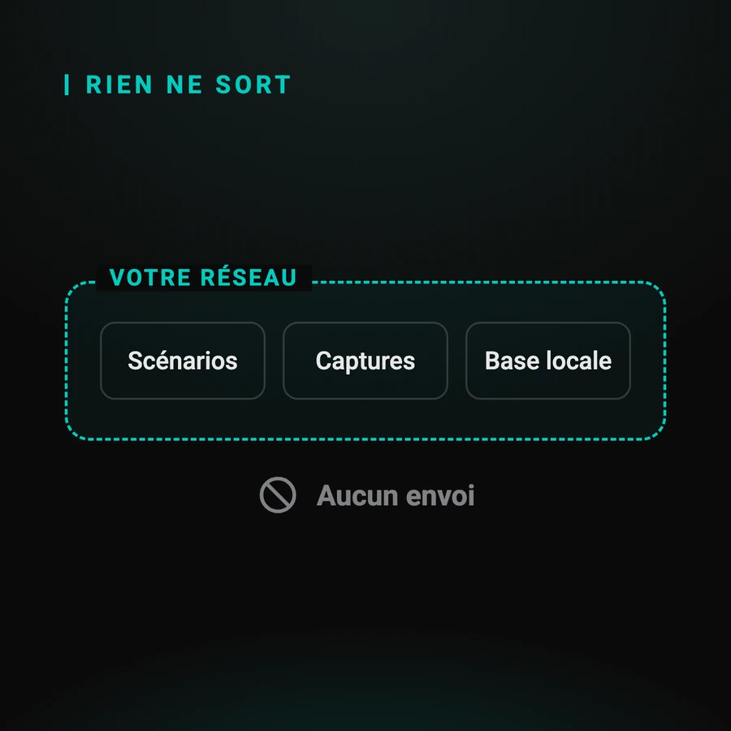

Sécurité, conformité et données de test
C'est souvent la question qui décide, et elle ne vient pas du testeur : elle vient de la personne qui doit signer. Ce guide répond aux trois points d'une revue de sécurité, dit ce qu'il faut inscrire dans un registre de traitement, et énonce ce que l'approche ne couvre pas.
Par Sylvain Perez, créateur de Q-Bot. Mis à jour le
Quelles données un test d'authentification manipule-t-il ?
Moins qu'on ne l'imagine, et il vaut de le poser noir sur blanc : un compte de test, ses identifiants, les captures d'écran des scénarios, et les codes à usage unique lus au vol. Aucune donnée de production, aucune donnée de client réel, si l'environnement est correctement séparé.
L'inventaire complet, ligne par ligne :
- un compte de test et son mot de passe, gérés comme n'importe quel secret de la chaîne
- les captures d'écran qui servent de fond aux étapes d'un scénario
- les codes à usage unique, valables quelques dizaines de secondes, lus puis rendus au test
Le point qui rassure une revue : il n'y a aucun secret d'authentification à extraire de l'application. Le pourquoi est dans « automatiser la 2FA sans clé secrète partagée ».
Où vont ces données ?
Nulle part. Les scénarios et leurs captures restent dans le boîtier, sur votre réseau, dans une base locale. Rien n'est envoyé vers un service en ligne, et aucune connexion internet n'est nécessaire pendant l'exécution des tests. Cela se vérifie en coupant le réseau et en relançant une campagne.

Concrètement :
- les scénarios et leurs captures sont stockés dans le boîtier, jamais sur un service en ligne
- aucune connexion internet n'est nécessaire pendant les tests
- aucune clé d'API à distribuer, donc aucun secret à faire circuler dans la chaîne d'intégration
- le boîtier et le téléphone restent dans vos locaux, sur votre réseau
C'est ce qui distingue ce modèle d'un appareil hébergé chez un tiers, différence détaillée dans le comparatif des deux familles d'outils.
Que demande une revue de sécurité ?
Presque toujours les mêmes cinq choses : la surface exposée, les secrets en circulation, la localisation des données, la traçabilité des accès et la fin de vie du matériel. Les avoir préparées transforme une revue de trois semaines en une réunion d'une heure.
Les cinq, avec ce qu'il faut pouvoir montrer :
- surface exposée : une API HTTP sur votre réseau local, pas d'accès entrant depuis l'extérieur
- secrets : le compte de test, rien d'autre ; pas de clé d'API à provisionner
- localisation : base locale sur le boîtier, dans vos locaux
- traçabilité : qui déclenche quel scénario, et depuis quelle chaîne
- fin de vie : ce qu'il reste sur le matériel quand il est rendu ou remplacé
Sur le dernier point, la réponse honnête est qu'un boîtier rendu contient encore vos captures d'écran tant qu'on ne l'a pas effacé : c'est une ligne à écrire dans votre procédure de restitution, pas une propriété du produit.
Qu'est-ce que cette approche ne couvre pas ?
Trois choses, et mieux vaut les savoir avant qu'après : elle ne remplace pas la séparation de vos environnements, elle ne chiffre pas les captures au repos, et elle ne dispense pas de gérer le compte de test comme un secret de production.
À traiter chez vous, parce que ce n'est pas le produit qui le fera :
- la séparation des environnements : si votre recette parle à la production, aucun outil de test ne corrigera ça
- le chiffrement au repos des captures dans le boîtier n'est pas assuré : à couvrir par le chiffrement du support si votre politique l'exige
- le compte de test reste un secret à faire tourner, à révoquer et à surveiller comme les autres
Le reste du sujet, du point de vue du testeur cette fois, est dans la page de référence sur l'automatisation de la 2FA.